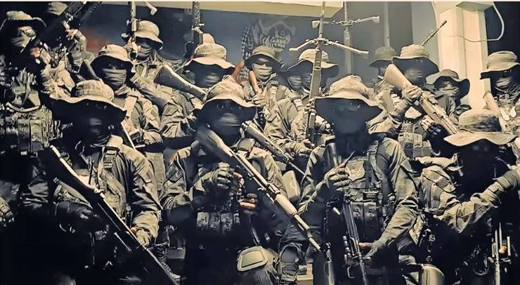
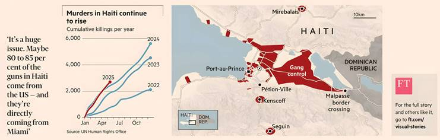

Military-grade weapons smuggled in from the US are empowering the country's
militias which now control most of the capital and are challenging the
authority of a fragile government.
By Joe Daniels, Myles McCormick, Alison Killing, Chris Campbell, Peter Andringa
and Sam Joiner
It was 5am on Tuesday, February 25 when members of Viv Ansanm, a coalition of Haiti's gangs, announced their advance through the densely populated neighbourhood of Delmas 30 in the capital Port-au-Prince with bursts of gunfire. Wielding assault rifles, handguns and machetes, they looted homes and put them to the torch. Some people were burned alive in front of their children. Women were raped. Two off-duty soldiers, who were brothers, were killed in the onslaught.
Among those who fled were Johnise Grisaule and her three-year-old son, who are now staying a few kilometres away in a clinic repurposed as a refugee camp, alongside more than 4,800 of their neighbours. "The police couldn't do anything," Grasaule says, on a recent sweltering afternoon, swatting away flies. "There were so many more bandits and with much bigger guns."
Haiti, the poorest country in the western hemisphere, is mired in a political, economic and security crisis that exploded with the assassination of President Jovenel Moïse in July 2021. Gangs now control 90 per cent of metropolitan Port-au-Prince, according to the UN, encircling the transitional government's last redoubt in the upscale suburb of Pétion-Ville.
Services from healthcare and electricity to rubbish collection have collapsed, while gangs control the ports and all roads into the capital, extorting fees for goods that enter. Unable to flee, residents are crammed into safe zones. Countless neighbourhoods around the city, often deserted, show the aftermath of battle, with rubble lining the streets and bullet holes pockmarking the charred remains of buildings.
"There is a real risk that Port-au-Prince will fall to the gangs, granting them political power across the country," Haiti's finance minister Alfred Métellus tells the FT.
Outside the capital, gangs have continued their expansion. There were 5,626 murders recorded across Haiti last year, up 1,000 from 2023. The UN has reported a further 2,700 in the first five months of 2025. Around 1.3 million people, out of a population of 11.5 million, have been displaced, while 5.7 million people lack access to adequate food.
Fuelling the bloodshed is the gangs' growing arsenal of military-style weaponry, much of which originates with purchases from US gun shops and ends in the slums of Haiti. "The problem is that in the USA, anyone can buy a weapon," Metellus says. "Then they are shipped in [cargo] boxes from the Miami River."
The origins of Haiti's gangs can be traced back to the 1960s and the feared Tonton Macoutes paramilitaries of the Duvalier dictatorships which lasted until 1986. Romain Le Cour Grandmaison, a researcher with the Global Initiative against Transnational Organized Crime, says the gangs grew out of militias formed by politicians and business owners wishing to rule areas informally and intimidate and disrupt their competitors, but that the money the groups made from extortion and smuggling gave them autonomy from their paymasters. The assassination of Moïse then created a power vacuum which they swiftly filled. The creation of the Viv Ansanm coalition in 2024—ending years of feuding between rival gangs—was a decisive turning point, according to politicians and analysts.
"It's a coalition of interest groups that has constructed the chaos that we are living through," Fritz Jean, who chairs the transitional presidential council currently governing Haiti, tells the Financial Times.
Diego Da Rin, a Haiti analyst with the International Crisis Group, says that the goal of Viv Ansanm "is to reach the offices of the prime minister and the presidential council and topple the government, without offering a clear plan for what would follow."
The gangs' metamorphosis into heavily-armed militias more akin to SWAT teams can be seen in the braggadocious videos they post of themselves on social media. In one slickly produced clip, the leader of the 5 Segonn gang, Johnson Andre—better known by his nom-de-guerre "Izo"—flaunts weaponry and armour, which includes SUVs painted in camouflage and rifles fitted with scopes. In another post, Izo wears body armour and a ballistic helmet while taunting the Multinational Security Support Mission to Haiti (MSS)—a UN-approved and Kenyan-led force designed to bolster the country's outmatched national police.
The gangs are increasingly using these higher calibre weapons, says Robert Muggah, co-founder of the Igarapé Institute, a Brazil-based security think tank that has been studying Haiti's gangs. "Pistols and revolvers are one thing but an AR-15, or an M10, or a sniper rifle is another."
An FT analysis of US court documents, shipping records and statements by Haitian and Dominican authorities reveals how these guns are smuggled into the country.
In February, the Sara Regina, a hulking 90m cargo ship, journeyed from Miami to Haina Occidental Port in the Dominican Republic, which shares the island of Hispaniola with Haiti, bringing with it a cache of weapons. The vessel was transporting a container with second-hand goods, including bicycles and refrigerators. Such items are frequently sent by Haitians in Florida to friends and relatives in their homeland, where even basic necessities are difficult to obtain.
The seizure by the Dominican customs officers showcases the firepower Haiti's gangs are attempting to import from the US. Haiti does not manufacture any firearms or ammunition, with other guns wielded by the groups stolen from the Haitian military and police.
In the first half of 2022, officials at Haina Occidental Port seized more than 112,000 "units of firearms and ammunition", with much of it shipped from Miami, according to a UN report.
According to trade data platform CargoFax, between July 2020 and March 2023, 34 shipments were sent from US ports to Haitian individuals now on the US sanctions list. It included 24 shipments for Prophane Victor, a former member of parliament who has long been accused by the UN and US of arming gangs. The goods he received were described as personal effects—thrift store items and used shoes.
Officials say weapons are proliferating across the region. According to an October report by the US firearms enforcement agency, 73 per cent of guns recovered in crimes in the Caribbean between 2018-22 were from the US, mainly Florida, Georgia and Texas. Easy access to these weapons increases violence in other countries, says Evan Ellis, professor of Latin American studies at the US Army War College.
Miami has become the main hub for smuggling weapons to Haiti for a number of reasons: it has a large diaspora swelled by refugees; there is a loosely regulated export industry which sends small shipments of second-hand goods to the country; and Florida's lenient gun laws. Florida does not require a permit to purchase firearms and there is no limit on the number that can be bought in a single transaction. In 2023, Florida scrapped the mandatory training, licensing fees and background checks required to carry a concealed weapon.
"It's a huge issue,” says Sheila Cherfilus-McCormick, a congresswoman representing south Florida in the House of Representatives and the only sitting Haitian-American lawmaker. "Maybe 80 to 85 per cent of the guns in Haiti come from the US—and they're directly coming from the Miami River."
Joseph Lestrange, a former senior official investigating transnational organised crime at the US Department of Homeland Security, says that the purchases begin with the gangs finding people who are eligible to purchase them on behalf of those who are not.
"You have transnational criminal organisations who pay recruiters to find... straw buyers with clean criminal records," Lestrange says.
Analysis of US court records from an earlier arms seizure sheds light on how this process works.
In 2021, Joly Germine, a leader of 400 Mawozo, one of Haiti's largest gangs, organised the purchase of guns from his jail cell in Haiti. According to court documents, Germine used WhatsApp to instruct Florida-based straw buyers to obtain military-style rifles—weapons he said would give him dominance over the Haitian police and enable him to inflict huge casualties.
From March to November, two Florida-based Haitians bought 24 weapons from gun shops in the state, including a Barrett M82 50-calibre anti-materiel rifle and 9 Century Arms AK-type rifles, according to court documents. Assisted by Germine's girlfriend, the group planned to hide the guns in barrels and transport them to Haiti. The conspirators completed two weapons shipments, with a third seized in an FBI raid on a lock-up in Orlando.
The money to buy the guns had come from a series of kidnappings carried out in Haiti by 400 Mawozo in the preceding years, according to prosecutors. In June and July 2021, $25,000 was paid to the gang to secure the release of two US citizens, with $50,000 paid to free a third American hostage the next month.
The gang often used money transfer services such as Western Union and MoneyGram, breaking large amounts down into smaller transactions and using multiple services on the same day to avoid suspicion. In this way, the gang sent $37,500 to the US between March and October 2021.
Germine, who was extradited to the US in 2022, pleaded guilty to the gun trafficking charges in 2024 and was found guilty in May 2025 for his involvement in the hostage taking of American citizens in Haiti.
Once the weapons have been purchased, freight forwarders—companies that consolidate and package shipments into container loads—are the next step in the illicit supply chain.
Shipping records show that while consignments of food travel to Haiti from multiple US ports, the trade in personal items and second-hand goods—the small shipments in which experts say it is so easy to conceal weapons—largely comes from the Port of Miami or Port Everglades, 30 miles to the north.
The container aboard the Sara Regina, the ship which was seized in February in the Dominican Republic, originated with a freight forwarding group called Eugenio Trading, located in a nondescript Miami warehouse in an industrial district north of the city's airport. The group specialises in sending clothing to the Caribbean.
The company's owner, Urbano Eugenio, is now in pre-trial detention in Santo Domingo in connection with the seizure of the vessel. But his son Sergio says his father was "used" by gun smugglers after a Haitian woman approached him last year to send an empty container to Jacksonville for a supposed furniture shipment to Haiti.
"We don't usually do this for anybody," Eugenio Jr told the FT. "We did it as a favour... we were used."
But Eugenio Jr says there is little that can be done by freight forwarding companies like his to prevent such shipments given the scale of the operations.
From the freight forwarders, the cargo is transferred to carriers who transport the goods to Haiti. Three miles from Eugenio Trading's warehouse, on the Miami River, is Antillean Marine, the largest shipping carrier for cargo travelling between Miami and Haiti and the group that operates the Sara Regina. The company declined to speak to the FT about the cache of guns on the vessel.
The danger posed by gangs at Haiti's ports means shipments to the country increasingly arrive via the Dominican Republic, with goods then driven across the border.
Métellus, the finance minister, says the country has stepped up checks of its land border of imports of goods transiting from the Dominican Republic in an attempt to reduce the gangs' revenues.
Gangs on the Haitian side of the border charge $2,000 for each container that passes through, Métellus says. With 5,000 containers crossing the border a month before it was closed, the trade could be worth $120 million a year.
Efforts to stem the flow of weapons including a UN-imposed arms embargo in October 2022 and the US declaration of Viv Ansanm as a foreign terrorist organisation—have so far failed to yield results in Haiti, where the security crisis continues to worsen and gangs now control more than 90 per cent of the capital, according to the UN.
On the ground, MSS, the Kenyan-led security mission, has made little gains since it arrived in June last year. In a desperate bid to change the tide of battle, Haiti's presidential council has turned to employing US mercenaries and attacking the gangs with explosive-laden "kamikaze" drones, like the one sent in March, unsuccessfully, to kill Jimmy "Barbecue" Cherizier, head of the Viv Ansanm alliance.
Volker Türk, the UN High Commissioner for Human Rights, said in June that the "crucial" coming months will "test the international community's ability to take stronger, more coordinated action" to determine the country's future stability. "No more illegal weapons should be allowed to facilitate the horrors unfolding in Haiti."